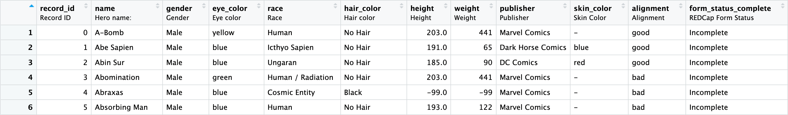

install.packages("REDCapTidieR")REDCapTidieR 1.0.0 üéâ
REDCap
REDCapTidieR
R
REDCapTidieR v1.0.0 Release Announcement
We’re delighted to announce that REDCapTidieR has earned v1.0.0 status on CRAN! REDCapTidieR provides a user-friendly way to import data from a REDCap project into the R environment.
You can install the package from CRAN with:
It‚Äôs hard to believe, but REDCapTidieR has been in development for over a year since the CGT Informatics team began working on it in July of 2022. During that time, the package has taken on a number of changes, feature considerations, and optimizations that we believe make this package worthy of being considered stable (üéâ).
While there are no new features to announce, this post will take the opportunity to walk down memory lane and review the road map that got us to where we are today.
The Early Beginnings
As with most software solutions, the motivation for creating REDCapTidieR began with frustration. At the Children’s Hospital of Philadelphia, the CGT Informatics team supports a number of REDCap databases responsible for clinical trial data by providing applications, dashboards, and reports to principal investigators for their respective studies. It became clear after the first few interactions with these longitudinal datasets, that we were quickly repeating mundane operations to tidy up the data outputs of REDCap into usable, reportable formats.
As avid R users and subscribers to “tidy data,” we quickly realized how unwieldy the standard REDCap block matrix output was and that there was an opportunity to reshape it into a format that aligns with tidy data principles. After assessing the landscape of REDCap tools available for programmatic interaction, we found that there wasn’t a truly tidy framework in R that could support reformatting the block matrix, and so we got to work at designing our own.
Not a Bird, Not a Plane, but a Supertibble
In order to accommodate tidy data principles, the new format of the block matrix had to meet the following criteria:
- Each variable had to form a column
- Each observation had to form a row
- Each type of observational unit had to form a table
While the block matrix can be considered to pass the first two criteria, longitudinal REDCap projects that contain repeating instruments and events result in inconsistent granularity between rows. To reintroduce consistency, we needed to break apart the block matrix into sub-tables, i.e. data tibbles. This would allow us to handle the composite primary keys that make up the identifiers for repeating instruments and events by representing each instrument in an individual table with only the identifier columns necessary to form its key.
Apart from being fun to say, arriving at the “supertibble” was a natural next step for consolidating all of these data tibbles under one roof. The supertibble is the vehicle for containing a REDCap projects data tibbles, identified by instrument name, metadata tibbles, and various other pieces of information about the instrument. From here, users can easily join together the data they need for their use cases or take advantage of the bind_tibbles() / bind_tibble() functions to place them directly into their programming environment.

Extensions and Additional Features
We put a considerable amount of effort into making sure the user interface of REDCapTidieR is easy to use, easy to navigate, and suits most common needs. You wouldn’t believe the lengthy discussions had over the name of the package, the names of the core functions, and then the names of the updated core functions when we realized we didn’t like the ones we chose anymore. Once we solidified the core functionality, we expanded REDCapTidieR’s capabilities.
First we incorporated variable labels support through the labelled package. With a simple call to make_labelled(), users can effortlessly enhance data readability, allowing for easier interpretation and analysis by adding labels to their data tibbles.

By tapping into the openxlsx2 package, we opened the sueprtibble up to XLSX export capability. By using write_redcap_xlsx(), users can immediately conver their data tibbles to spreadsheets where each data tibble comprises its own XLSX sheet, expanding the flexibility of data management that REDCapTidieR can provide.

Acknolwedgements
REDCapTidieR is the first open source package our team has made available to the community. The success of it wouldn’t be possible without the support and collaboration of the those who helped with its development, opened issues, or contributed to discussions: @camcaan, @JanMarvin, @matthieu-faron, @olivroy, @pwildenhain, @tschuler, @wibeasley.
Miscellaneous
- Updated any functions that relied on
openxlsx2to use the newest stable functions of its 1.0 release - Internal package cleaning and consolidation
- Updates to the
pkgdownsite